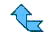

- background-color
Атрибут позволяет задать цвет фона абзаца, присвоив ему шестнадцатеричное значение,
либо задать прозрачность transparent.
Синтаксис: селектор {background-color: #ffffff}
- background-image
Атрибут позволяет задать фоновый рисунок страницы, указав его URL.
Синтаксис: селектор {background-image: URL("URL");}
- background-position
Атрибут позволяет задать расположение фонового рисунка страницы,
указав его отступы по осям x и y, кроме численных значений
может задаваться как:
- left
- top
- center
- right
- bottom
Синтаксис: селектор {background-position: left 45pt;}
- background-attachment
Атрибут позволяет задать будет ли фоновый рисунок страницы фиксированным, указав scroll или fixed.
Синтаксис: селектор {background-attachment: scroll;}
- background-repeat
Атрибут позволяет задать будет ли фоновый рисунок страницы заполнять фон черепицей и как, указав:
- repeat - повторяется
- no-repeat - не повторяется
- repeat-x - повторяется по оси x
- repeat-y - повторяется по оси y
Синтаксис: селектор {background-attachment: scroll;}
- color
Атрибут позволяет задать цвет текста страницы, присвоив ему шестнадцатеричное значение.
Синтаксис: селектор {color: #000000}
